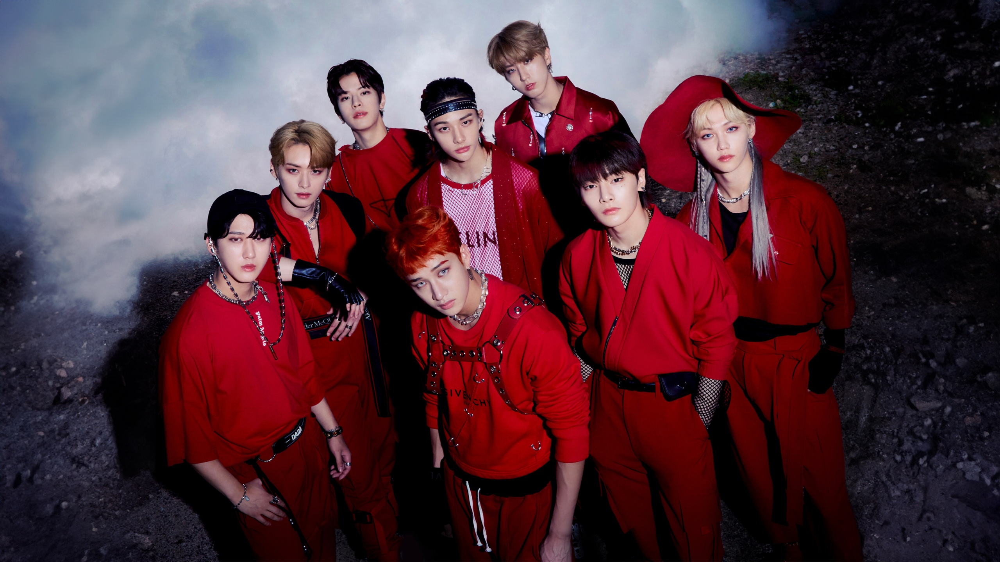
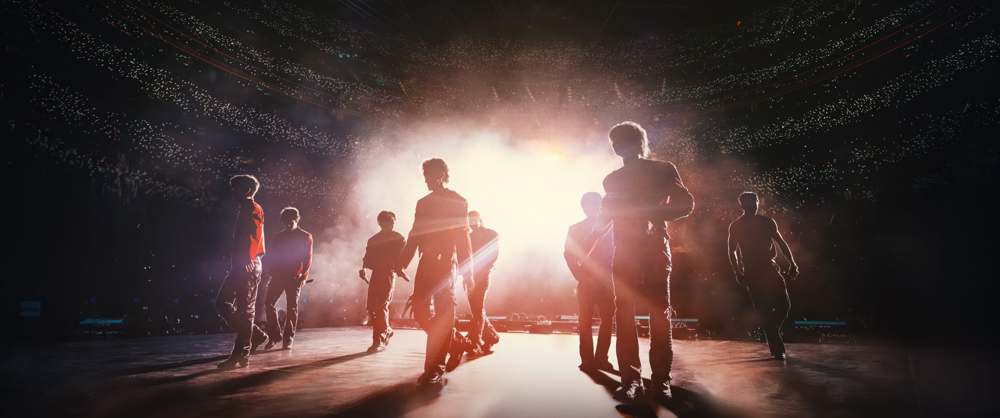

Stray Kids




A Stray Kids egy dél-koreai fiúegyüttes, amelyet a JYP Entertainment alapított 2017-ben egy azonos című túlélőműsor keretében. A csapat hivatalosan 2018. március 25-én debütált a I Am NOT című mini albummal és a District 9 című dallal.
A csapat nyolc tagból áll (Bang Chan, Lee Know, Changbin, Hyunjin, Han, Felix, Seungmin és I.N), akik mind különböző tehetségekkel járulnak hozzá az együttes zenéjéhez, táncaihoz és kreatív munkájához.
Az együttes gyorsan nemzetközi sikert ért el, és világszerte nagy rajongótáborral rendelkezik, amelyet STAY néven ismernek. Olyan népszerű dalaik vannak, mint a God's Menu, MANIAC és Back Door.